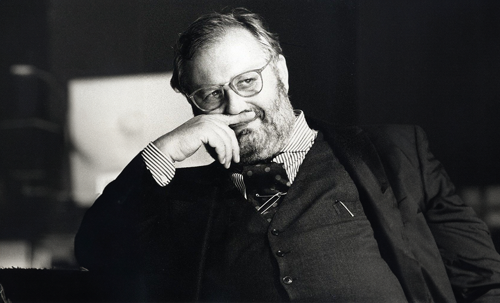

지안 프랑코 페레
Gianfranco Ferré

그의 디자인은 디오르의 엘레강스에 지성미와 도화적인 세련미가 더불어 표현되었다. 그의 디자인 테크닉은 우아한 곡선적인 이미지의 볼륨있는 형태, 부분적인 여밈이나 헴라인에서의 직선적인 언배런스의 대담한 커팅선, 그래픽 꽃무늬 등의 화려하고 고급스러운 직물과 동일계열의 색채 혼합, 수공예적이고 입체적인 느낌의 자수와 레이스, 디테일, 트리밍을 사용하되 특히, 컬러나 상의 부분의 디테일을 강조하며 리듬과 강조 기법을 다시 전체 균형미로서 가다듬어 디오르 1세보다 더 복합적인 테크닉과 풍요함으로 디오르의 엘레강스를 현대적으로 표현했다.